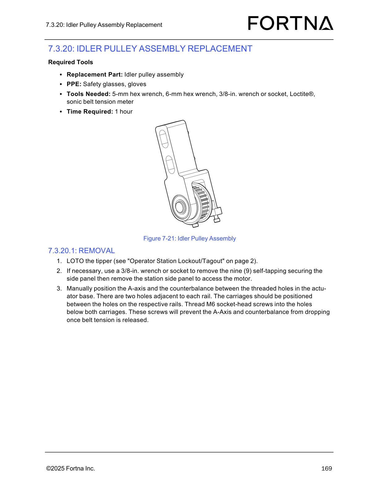

| Procedure ID | proc_remove_idler_pulley_assembly_a_axis_counterbalance_belt_system_lotoed_tipper_v1 |
|---|---|
| Title | Remove Idler Pulley Assembly (A-axis / counterbalance belt system) on a LOTOed tipper |
| Procedure Type | recovery |
| Primary Role | operator |
| Support Safe | Yes |
| Capability Tags | tipper_station_fault |
| Access Surface | physical_floor |
| Audience Roles | operator |
| Failure Pattern Tags | bag_out_stuck |
| Validation Status | needs_sme_review |
| Merge Status | source_finalized |
LOTO the tipper, access the station side panel if needed, manually position and secure the A-axis/counterbalance using the actuator base threaded holes, remove belt clamps, release belt tension, unfasten the idler pulley assembly (M8x25 screws), and slide the idler pulley assembly out of the column. If needed, transfer the M6x35 tensioning screws to the new assembly.
Use when removing/replacing the tipper’s idler pulley assembly as part of a mechanical maintenance/recovery task, following the manual’s LOTO and belt-tension release precautions to prevent dropping once tension is released.

Responsible role: operator
Instruction:
Apply lockout/tagout to the tipper (manual references “Operator Station Lockout/Tagout” on page 2).
Expected result:
The tipper is LOTOed and ready for mechanical work.
Responsible role: operator
Instruction:
If necessary, use a 3/8-in. wrench or socket to remove the nine (9) self-tapping securing screws for the station side panel, then remove the station side panel to access the motor.
Expected result:
Station side panel is removed and the motor access area is available.
Responsible role: operator
Instruction:
Manually position the A-axis and the counterbalance between the threaded holes in the actuator base: there are two holes adjacent to each rail; position the carriages between the holes on the respective rails.
Expected result:
A-axis and counterbalance carriages are positioned between the threaded holes adjacent to each rail.
Responsible role: operator
Instruction:
Thread M6 socket-head screws into the holes below both carriages.
Expected result:
M6 socket-head screws are threaded into the holes below both carriages, preventing drop when belt tension is released.
Stop or Escalate If:
Responsible role: operator
Instruction:
Remove the belt clamps by removing the six (6) M6x20 countersunk screws with a 5-mm hex wrench from each clamp to free the carriages from the belt.
Expected result:
Belt clamps are removed and carriages are free from the belt.
Responsible role: operator
Instruction:
Release belt tension by loosening the two (2) M6x35 socket-head screws on the bottom side of the assembly.
Expected result:
Belt tension is released after loosening the two M6x35 socket-head screws.
Stop or Escalate If:
Responsible role: operator
Instruction:
Remove the two (2) M8x25 socket-head screws holding the idler pulley assembly in place, then slide the idler pulley assembly out of the column. If needed, transfer the M6x35 tensioning screws from the removed idler pulley assembly to the new assembly.
Expected result:
The two M8x25 screws are removed and the idler pulley assembly slides out of the column; if required, M6x35 tensioning screws are transferred to the new assembly.
Stop or Escalate If: